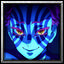

Hero statistics · Season 2
V バージルースパーダの息子
FSA MCB · Recorded ranked matches
Recorded picks7
Win rate29%
Avg K / D / A46.1 / 35.0 / 11.3
Avg damage dealt252.1k
Avg APM135
Players on this hero
Most picks first| # | PLAYER | PICKS | WIN RATE | AVG K / D / A |
|---|---|---|---|---|
| 1 | teradestroyer13 【Silver Arbiter】 | 2 | 0% | 59.5 / 35.5 / 7.5 |
| 2 | greenoptic 仮面ライダークロノス | 1 | 100% | 41.0 / 33.0 / 10.0 |
| 3 |  rimurut Akaza | 1 | 100% | 54.0 / 24.0 / 11.0 |
| 4 | efreet17 Dante スパーダの息子 | 1 | 0% | 38.0 / 34.0 / 12.0 |
| 5 | thestrongest The Strongest | 1 | 0% | 43.0 / 36.0 / 5.0 |
| 6 | ximperial Dante スパーダの息子 | 1 | 0% | 28.0 / 47.0 / 26.0 |
Recent matches
LOSS60:08
MCB #2000208
06 Nov 2026 · 01:55 WIB
60.0 / 33.0 / 6.0View match →
LOSS52:36
MCB #2000202
04 Nov 2026 · 19:09 WIB
28.0 / 47.0 / 26.0View match →
LOSS54:49
MCB #2000195
02 Nov 2026 · 02:11 WIB
43.0 / 36.0 / 5.0View match →
WIN63:36
MCB #2000184
29 Oct 2026 · 19:49 WIB
54.0 / 24.0 / 11.0View match →
LOSS59:16
MCB #2000175
24 Oct 2026 · 16:10 WIB
59.0 / 38.0 / 9.0View match →
WIN61:43
MCB #1000061
23 Oct 2026 · 22:10 WIB
41.0 / 33.0 / 10.0View match →
LOSS55:13
MCB #2000166
21 Oct 2026 · 02:45 WIB
38.0 / 34.0 / 12.0View match →